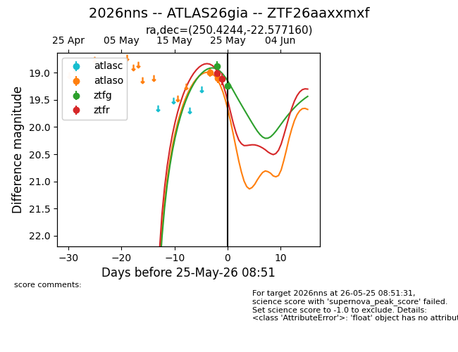
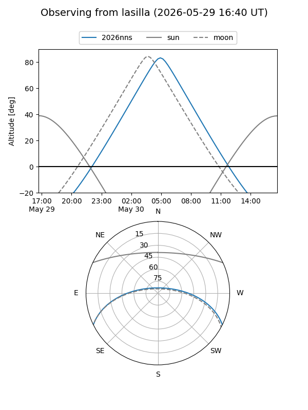
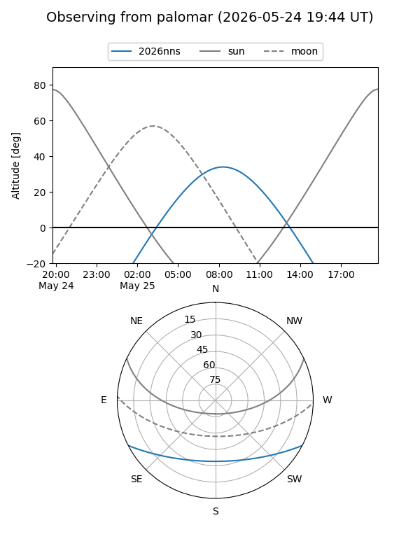
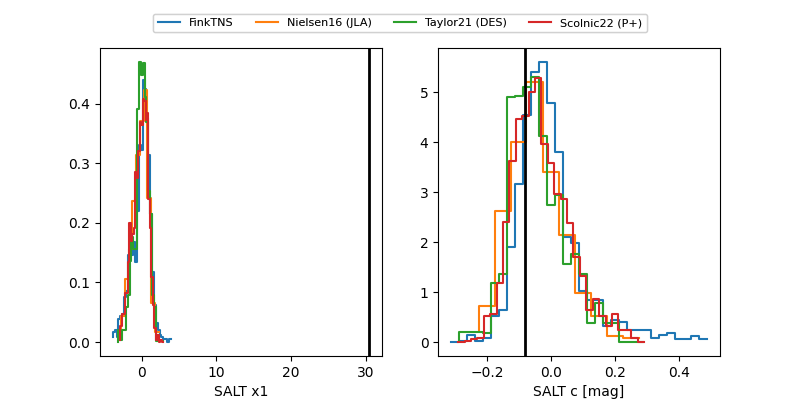

2026nns
Target 2026nns at 2026-05-25 08:53
Aliases and brokers:
lsst-FINK: link
lsst-Lasair: link
lsst-ALeRCE: link
ztf-FINK: link
ztf-Lasair: link
ztf-ALeRCE: link
TNS: link
YSE: link
alt names
ZTF26aaxxmxf (ztf,fink_ztf)
2026nns (tns,yse)
ATLAS26gia (atlas)
Coordinates:
equatorial (ra, dec) = 250.4244,-22.57716
equatorial (HMS+DMS) = 16:41:41.85,-22:34:37.77
galactic (l, b) = (356.8692,+15.40816)
Flags:
TNS confirmed: nan
Photometry:
last atlaso=19.10, ztfg=19.23, ztfr=19.12
2 atlaso, 2 ztfg, 2 ztfr detections
Lightcurve

Visibility


Additional plots
